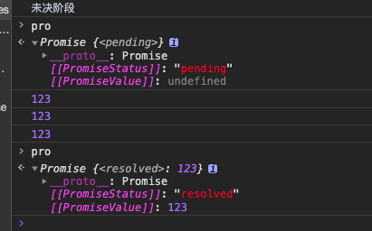
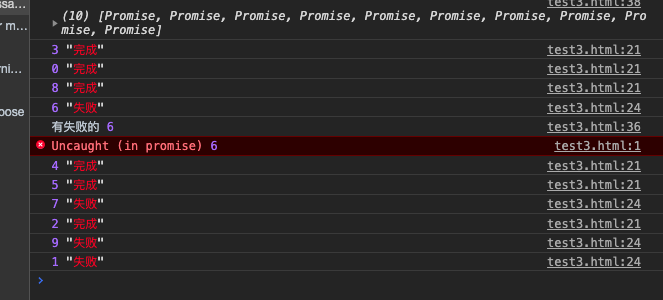
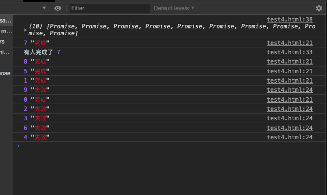

Promise的基本使用
const pro = new Promise((resolve, reject)=>{
// 未决阶段的处理
// 通过调用resolve函数将Promise推向已决阶段的resolved状态
// 通过调用reject函数将Promise推向已决阶段的rejected状态
// resolve和reject均可以传递最多一个参数，表示推向状态的数据
})
pro.then(data=>{
//这是thenable函数，如果当前的Promise已经是resolved状态，该函数会立即执行
//如果当前是未决阶段，则会加入到作业队列，等待到达resolved状态后执行
//data为状态数据
}, err=>{
//这是catchable函数，如果当前的Promise已经是rejected状态，该函数会立即执行
//如果当前是未决阶段，则会加入到作业队列，等待到达rejected状态后执行
//err为状态数据
})function interview(word) {
return new Promise(resolve => {
console.log(`去${word}面试`);
setTimeout(() => {
if (Math.random() < 0.1) {
//公司同意拉
resolve(true)
} else {
//resolve
resolve(false);
}
}, 3000);
})
}
interview("公司1").then(result => {
console.log(result);
})细节
- 未决阶段的处理函数是同步的，会立即执行
- thenable和catchable函数是异步的，就算是立即执行，也会加入到事件队列中等待执行，并且，加入的队列是微队列
const pro = new Promise((resolve, reject) => { console.log("未决阶段") setTimeout(() => { //在setTimeout还没运行之前pro都是出于pending阶段 resolve(123); }, 3000); }) pro.then(data => { // pro的状态是pending console.log(data); }) pro.then(data => { // pro的状态是pending console.log(data); }) pro.then(data => { // pro的状态是pending console.log(data); }) } - pro.then可以只添加thenable函数，pro.catch可以单独添加catchable函数
- 在未决阶段的处理函数中，如果发生未捕获的错误，会将状态推向rejected，并会被catchable捕获
const pro = new Promise((resolve, reject) => { throw new Error("123"); // pro: rejected }) pro.then(data => { console.log(data) }) pro.catch(err => { console.log(err) }) - 一旦状态推向了已决阶段，无法再对状态做任何更改
const pro = new Promise((resolve, reject) => { throw new Error("abc"); resolve(1); //无效 reject(2); //无效 resolve(3); //无效 reject(4); //无效 }) pro.then(data => { console.log(data) }) pro.catch(err => { console.log(err) }) - Promise并没有消除回调，只是让回调变得可控
Promise的串联
当后续的Promise需要用到之前的Promise的处理结果时，需要Promise的串联
Promise对象中，无论是then方法还是catch方法，它们都具有返回值，返回的是一个全新的Promise对象，它的状态满足下面的规则：
- 如果当前的Promise是未决的，得到的新的Promise是挂起状态
- 如果当前的Promise是已决的，会运行响应的后续处理函数，并将后续处理函数的结果（返回值）作为resolved状态数据，应用到新的Promise中；如果后续处理函数发生错误，则把返回值作为rejected状态数据，应用到新的Promise中。
后续的Promise一定会等到前面的Promise有了后续处理结果后，才会变成已决状态
如果前面的Promise的后续处理，返回的是一个Promise，则返回的新的Promise状态和后续处理返回的Promise状态保持一致。
例子1：
//获取李华所在班级的老师的信息
//1. 获取李华的班级id Promise
//2. 根据班级id获取李华所在班级的老师id Promise
//3. 根据老师的id查询老师信息 Promise
const pro = ajax({
url: "./data/students.json"
})
pro.then(resp => {
for (let i = 0; i < resp.length; i++) {
if (resp[i].name === "李华") {
return resp[i].classId; //班级id
}
}
}).then(cid => {
return ajax({
url: "./data/classes.json?cid=" + cid
}).then(cls => {
for (let i = 0; i < cls.length; i++) {
if (cls[i].id === cid) {
return cls[i].teacherId;
}
}
})
}).then(tid => {
return ajax({
url: "./data/teachers.json"
}).then(ts => {
for (let i = 0; i < ts.length; i++) {
if (ts[i].id === tid) {
return ts[i];
}
}
})
}).then(teacher => {
console.log(teacher);
})例子2
const pro1 = new Promise((resolve, reject) => {
throw 1;
})
const pro2 = pro1.then(result => {
return result * 2
}, err => {
return err * 3; //pro1 报错走reject
});
pro1.catch(err => {
return err * 2;
})
//pro2类型：Promise对象
//pro2的状态：
pro2.then(result => console.log(result * 2), err => console.log(err * 3)) //pro2没有发生错误 所以走resolve
//输出：6例子3
const pro1 = new Promise((resolve, reject) => {
resolve(1);
})
const pro2 = new Promise((resolve, reject) => {
setTimeout(() => {
resolve(2);
}, 3000);
})
pro1.then(result => {
console.log("结果出来了，得到的是一个Promise")
return pro2; //Promise
}).then(result => {
console.log(result)
}).then(result => {
console.log(result)
})
//输出：结果出来了，得到的是一个Promise 2 undefined例子3
function interview(word) {
return new Promise(resolve => {
console.log(`去${word}面试`);
setTimeout(() => {
if (Math.random() < 0.3) {
//同意拉
resolve(true)
} else {
//resolve
resolve(false);
}
}, 500);
})
}
/*
场景：找工作 三家公司
面试第一家公司，如果拒绝，就面试第二家公司，直到所有公司拒绝，或有一个公司发送同意offer为止
用代码模拟上面场景
*/
const words = ["工作1", "工作2", "工作3"];
let pro;
for (let i = 0; i < words.length; i++) {
if (i === 0) {
pro = interview(words[i]);
}
pro = pro.then(resp => {
if (resp === undefined) {
return;
} else if (resp) {
console.log(`${words[i]}同意了`)
return;
} else {
console.log(`${words[i]}拒绝了`)
if (i < words.length - 1) {
return interview(words[i + 1]);
}
}
})
}Promise的其他api
原型成员 (实例成员)
- then：注册一个后续处理函数，当Promise为resolved状态时运行该函数
- catch：注册一个后续处理函数，当Promise为rejected状态时运行该函数
- finally：[ES2018]注册一个后续处理函数（无参），当Promise为已决时运行该函数
const pro = new Promise((resolve, reject) => {
reject(1);
})
pro.finally(() => console.log("finally1"))
pro.finally(() => console.log("finally2"))
pro.then(resp => console.log("then1", resp * 1));
pro.then(resp => console.log("then2", resp * 2));
pro.catch(resp => console.log("catch1", resp * 1));
pro.catch(resp => console.log("catch2", resp * 2));
//注册顺序会影响运行顺序
// 输出 finally1 finally2 catch1 catch2
const pro = new Promise((resolve, reject) => {
reject(1);
})
pro.then(resp => console.log("then1", resp * 1));
pro.then(resp => console.log("then2", resp * 2));
pro.catch(resp => console.log("catch1", resp * 1));
pro.catch(resp => console.log("catch2", resp * 2));
pro.finally(() => console.log("finally1"))
pro.finally(() => console.log("finally2"))
//注册顺序会影响运行顺序
// 输出 catch1 catch2 finally1 finally2构造函数成员 （静态成员）
resolve(数据)：该方法返回一个resolved状态的Promise，传递的数据作为状态数据
- 特殊情况：如果传递的数据是Promise，则直接返回传递的Promise对象
reject(数据)：该方法返回一个rejected状态的Promise，传递的数据作为状态数据
// const pro = new Promise((resolve, reject) => {
// resolve(1);
// })
//等效于：
// const pro = Promise.resolve(1);
// const pro = new Promise((resolve, reject) => {
// reject(1);
// })
//等效于：
// const pro = Promise.reject(1);
const p = new Promise((resolve, reject) => {
resolve(3);
})
// const pro = Promise.resolve(p);
//等效于
const pro = p;
console.log(pro === p)- all(iterable)：这个方法返回一个新的promise对象，该promise对象在iterable参数对象里所有的promise对象都成功的时候才会触发成功，一旦有任何一个iterable里面的promise对象失败则立即触发该promise对象的失败。这个新的promise对象在触发成功状态以后，会把一个包含iterable里所有promise返回值的数组作为成功回调的返回值，顺序跟iterable的顺序保持一致；如果这个新的promise对象触发了失败状态，它会把iterable里第一个触发失败的promise对象的错误信息作为它的失败错误信息。Promise.all方法常被用于处理多个promise对象的状态集合。
/*
面试20家公司
他同时面试二十家公司，如果有公司同意，就拒绝其他的公司
并且，当所有的公司回复完成后，把所有的回复都记录到日志进行分析
用代码模拟上面的场景
*/
function interview(word, callback) {
return new Promise((resolve, reject) => {
console.log(`去【${word}】面试`);
setTimeout(() => {
if (Math.random() < 0.05) {
//公司同意拉
resolve(true);
} else {
resolve(false);
}
}, Math.floor(Math.random() * (3000 - 1000) + 1000));
})
}
const proms = []; //用于存储 Promise对象
let hasAgree = false; //是否有公司offer
for (let i = 1; i <= 20; i++) {
const pro = interview(`公司${i}`).then(resp => {
if(resp) {
if(hasAgress) {
console.log(`回复公司${i}: 不好意思，已找到工作`)
}else {
hasAgress = true;
console.log(`终于找到了`);
}
}
return resp;
})
proms.push(pro);
}
Promise.all(proms).then(results => {
console.log("日志记录", results)
})function getRandom(min, max) {
return Math.floor(Math.random() * (max - min)) + min;
}
const proms = [];
for (let i = 0; i < 10; i++) {
// 把Promise放到数组中
proms.push(new Promise((resolve, reject) => {
setTimeout(() => {
if (Math.random() < 0.5) {
console.log(i, "完成");
resolve(i);
} else {
console.log(i, "失败")
reject(i);
}
}, getRandom(1000, 5000));
}))
}
//等到所有的promise变成resolved状态后输出: 全部完成
const pro = Promise.all(proms)
pro.then(datas => {
console.log("全部完成", datas);
})
pro.catch(err => {
console.log("有失败的", err);
})
console.log(proms);
- race(iterable)：当iterable参数里的任意一个子promise被成功或失败后，父promise马上也会用子promise的成功返回值或失败详情作为参数调用父promise绑定的相应句柄，并返回该promise对象
function getRandom(min, max) {
return Math.floor(Math.random() * (max - min)) + min;
}
const proms = [];
for (let i = 0; i < 10; i++) {
proms.push(new Promise((resolve, reject) => {
setTimeout(() => {
if (Math.random() < 0.5) {
console.log(i, "完成");
resolve(i);
} else {
console.log(i, "失败")
reject(i);
}
}, getRandom(1000, 5000));
}))
}
//等到所有的promise变成resolved状态后输出: 全部完成
const pro = Promise.race(proms)
pro.then(data => {
console.log("有人完成了", data);
})
pro.catch(err => {
console.log("有人失败了", err);
})
console.log(proms);